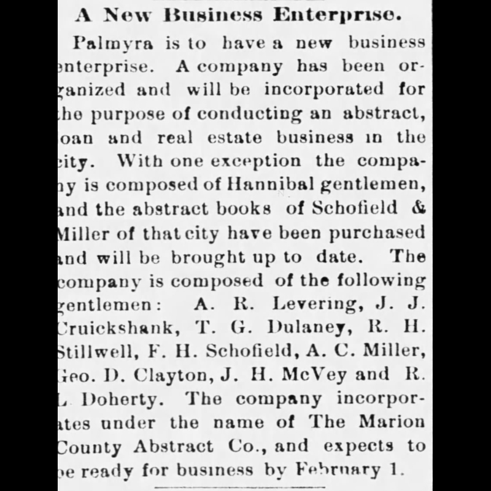

Mark Twain Title Company: A Visual History
January 20, 1898
The formation of the Marion County Abstract Company is announced.
(Palmyra Spectator 1/20/1898)
(Palmyra Spectator 1/20/1898)

January 27, 1898
Announcement of location for the company.
(Palmyra Spectator 1/27/1898)
(Palmyra Spectator 1/27/1898)

July 1, 1914
R. L. Doherty remained with the company after its sale.
(Palmyra Spectator 7/1/1914)
(Palmyra Spectator 7/1/1914)

June 12, 1935
William P Johnson passed away and left the company to his 2 sons, Robert Johnson and Stewart Johnson.
(Palmyra Spectator 6/12/1935)
(Palmyra Spectator 6/12/1935)

January 6, 1943
Both Stewart Johnson and Robert Johnson were inducted into World War 2 and had to close the company down for “the duration.”
(Palmyra Spectator 1/6/1943)
(Palmyra Spectator 1/6/1943)

October 20, 1943
Stewart Johnson and Robert Johnson profile on their service in the war.
(Palmyra Spectator 10/20/1943)
(Palmyra Spectator 10/20/1943)

November 14, 1945
Announcement of the re-opening of the Marion County Abstract Company.
(Palmyra Spectator 11/14/1945)
(Palmyra Spectator 11/14/1945)

November 14, 1945
Profile for the re-opening of the Marion County Abstract Company.
(Palmyra Spectator 11/14/1945)
(Palmyra Spectator 11/14/1945)

October 3, 1957
Announcement of Bob Johnson purchasing the company.
(Palmyra Spectator 10/3/1957)
(Palmyra Spectator 10/3/1957)
March 9, 1960
Article detailing the Palmyra Explosion of 1960, which occurred March 2, 1960.
(Palmyra Spectator 3/9/1960)
(Palmyra Spectator 3/9/1960)

March 9, 1960
Article detailing the Palmyra Explosion of 1960, which occurred March 2, 1960.
(Palmyra Spectator 3/9/1960)
(Palmyra Spectator 3/9/1960)

March 9, 1960
Photo showing the building damage.
(Palmyra Spectator 3/9/1960)
(Palmyra Spectator 3/9/1960)

March 10, 1960
Announcement thanking everyone for the help after the explosion.
(Palmyra Spectator 3/10/1960)
(Palmyra Spectator 3/10/1960)

November 24, 1960
Photograph showing the new building rebuilt after the explosion.
(Palmyra Spectator 11/24/1960)
(Palmyra Spectator 11/24/1960)

November 24, 1960
Article showing the new building rebuilt after the explosion.
(Palmyra Spectator 11/24/1960)
(Palmyra Spectator 11/24/1960)

November 24, 1960
Century Press newspaper post congratulating Marion County Abstract Company on their new building.
(Palmyra Spectator 11/24/1960)
(Palmyra Spectator 11/24/1960)

November 24, 1960
Photo showing the deed writing process used.
(Palmyra Spectator 11/24/1960)
(Palmyra Spectator 11/24/1960)

November 24, 1960
Photo showing the microfilm process.
(Palmyra Spectator 11/24/1960)
(Palmyra Spectator 11/24/1960)

Today Mark Twain Title Company is